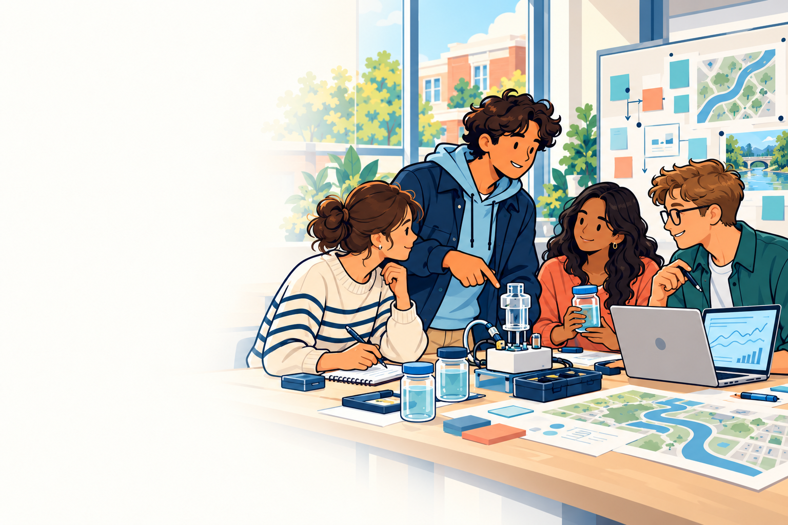
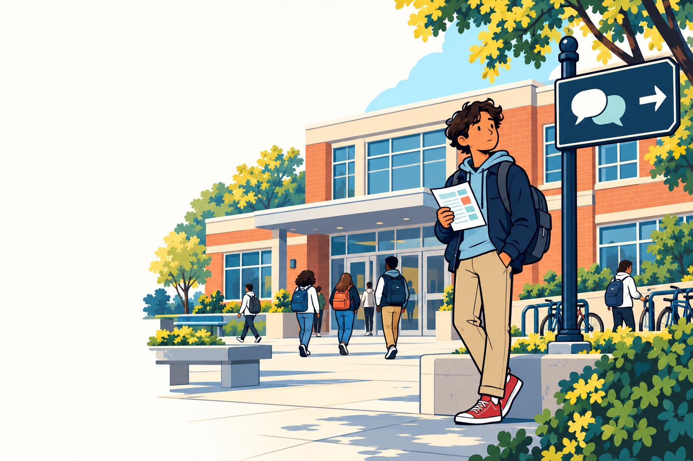
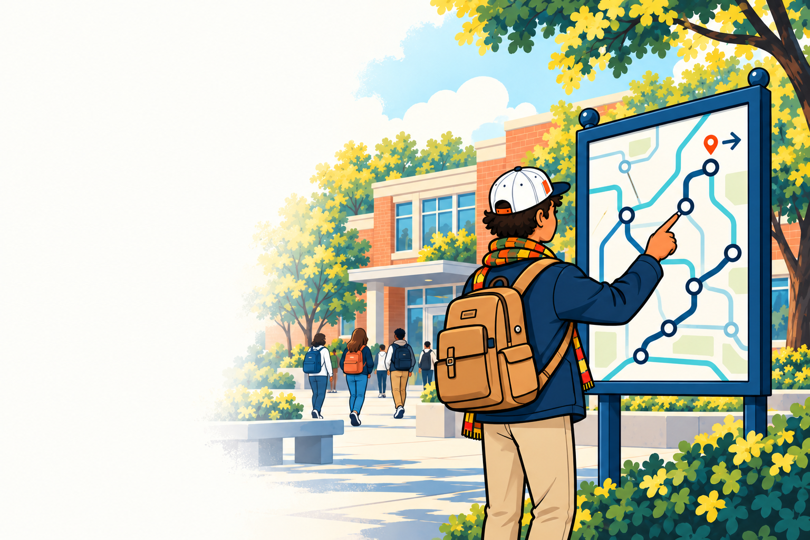

EDUC 701 · Milestone 3
Making Real-World Learning Work
Scaling interdisciplinary, credit-bearing learning by making collaboration easier to organize and sustain.
Explore the brochure →
Exploring how people learn, how organizations adapt, and how good ideas become practical solutions.

I’ve spent more than 25 years helping technology organizations set direction, build products, and change how they work. Through UNC’s MEITE program, I’m now bringing that experience to education.
I’m exploring how universities can adapt as AI changes learning and work, and how more undergraduates can gain meaningful experience before graduation. I’m especially interested in bringing students from different fields together with faculty and outside partners to tackle real problems without predetermined answers.
My starting question is practical: what would it take to make these experiences easier to offer, valuable to everyone involved, and available to more students?
Bring people together around the problem and a shared direction.
Turn ideas into practical solutions through prototypes and feedback.
Clear obstacles, put solutions to work, and learn from the results.
Writing, projects, and practical explorations of education, work, and what comes next.

EDUC 701 · Milestone 3
Scaling interdisciplinary, credit-bearing learning by making collaboration easier to organize and sustain.
Explore the brochure →EDUC 701 · Milestone 3 companion
AI may narrow the first steps into expertise. Universities can build new routes through consequential, credit-bearing learning.
Explore the brochure →
EDUC 701 · Student planning brochure
What I wish I’d understood before my children started high school—and what you can do now.
Explore the brochure →
UNC MEITE · Early-stage group project
Know where you’re going. Build confidence you’ll get there.
Explore Project Jarvis →Interested in collaborating or have a project in mind? I'd love to hear from you.